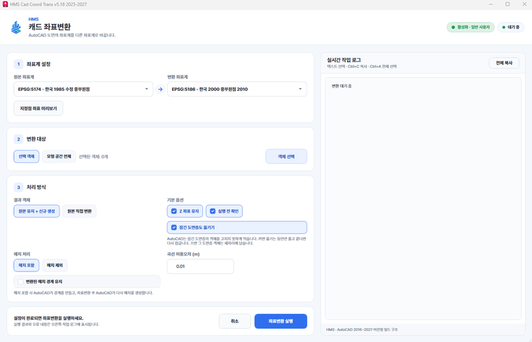

좌표계가 다른 도면 겹쳐 보기
받은 도면과 가지고 계신 도면의 좌표계가 달라 위치가 어긋날 때, 한쪽을 옮겨 같은 자리에 겹쳐 봅니다.
도면을 다른 프로그램으로 내보냈다가 다시 불러올 필요가 없습니다. AutoCAD 에 플러그인으로 올라가, 그 자리에서 도면 전체나 고른 객체만 새 좌표계로 옮깁니다.
모형 공간 전체를 옮기거나, 캐드에서 미리 고른 객체만 옮길 수 있습니다.
원본을 남기고 새로 만들지, 원본을 직접 바꿀지 처리 방식에서 고르실 수 있습니다.
받은 도면과 가지고 계신 도면의 좌표계가 달라 위치가 어긋날 때, 한쪽을 옮겨 같은 자리에 겹쳐 봅니다.
한국 1985 수정 중부원점(EPSG:5174) 도면을 한국 2000 중부원점 2010(EPSG:5186) 도면으로 옮기는 일에 씁니다.
웹 메르카토르로 된 도면을 국내 원점 좌표계로 옮기면, 캐드에서 길이와 면적을 실제 값으로 재실 수 있습니다.
해치와 그리기 순서를 지키며 옮기고, 잠긴 도면층의 객체는 옮기는 동안만 잠금을 풀었다가 다시 잠급니다.
쓰시는 AutoCAD 연도에 맞는 플러그인이 들어가며, 켜져 있는 AutoCAD 에도 바로 올라갑니다.
캐드 좌표변환 창이 열리고, 지난번에 쓰신 좌표계가 그대로 골라져 있습니다.
[지정점 좌표 미리보기]로 한 점을 찍어 바뀔 좌표를 먼저 확인하실 수 있습니다.
선택 객체나 모형 공간 전체를 고르고, 원본 유지 · 해치 포함 여부와 곡선 허용오차를 정합니다.
무엇을 몇 개 옮겼는지 작업 로그에 남고, [모든 객체 보기]로 도면 전체를 바로 확인하실 수 있습니다.
가상의 사업지(성수2지구 지구단위계획) 자료를 넣어 찍은 화면입니다.

베셀 타원체의 한국 1985 계열(서부 · 중부 · 동부원점, 수정 원점, 통합좌표계)과 세계측지계인 한국 2000 계열(서부 · 중부 · 동부 · 동해원점과 각 원점의 2010 좌표계, 통합좌표계), WGS84 경위도, 웹 메르카토르를 고르실 수 있습니다. 목록에는 EPSG 번호가 함께 적혀 있습니다.
두 좌표계의 원점이 달라 생기는 차이로, EPSG:5174 에서 EPSG:5186 으로 옮기면 같은 점이 약 10만 m 떨어진 자리로 갑니다. 타원체가 달라 면적과 거리도 아주 조금 바뀌는데, 안내서의 표본 240필지에서는 평균 0.0016%였습니다.
곡선 허용오차에 맞춰 잘게 나눈 폴리선으로 옮깁니다. 기본값 0.01 m 면 대부분의 도면에서 눈으로 차이를 느끼기 어렵고, 값이 작을수록 원본에 가깝지만 객체 수가 늘어납니다.
[원본 유지 + 신규 생성]을 고르시면 원본을 남기고 새로 만들고, [원본 직접 변환]을 고르시면 원본을 바꿉니다. 실행 전에 원본을 저장해 두시길 권합니다.
솔루션을 하나씩 받지 않습니다. Solution Center 를 한 번 설치하면 그 안에서 골라 설치합니다.
파이썬 같은 실행환경까지 함께 들어 있어, 쓰시는 컴퓨터에 따로 준비하실 것이 없습니다.
소속은 회사명 · 학교명 · 기관명을 정확히 적어 주셔야 승인됩니다.
내려받기부터 설치까지 한 번에 끝납니다. 새 버전이 나오면 카드가 알려 줍니다.
쓰시다가 막히면 화면을 캡처해 카카오톡 오픈채팅이나 메일로 보내 주세요. 오류 창이 떴다면 그 창까지 함께 담아 주시면 가장 빠릅니다. 문의하는 곳은 홈페이지 문의 칸에 모아 두었습니다.
모두 같은 Solution Center 안에서 골라 설치합니다.